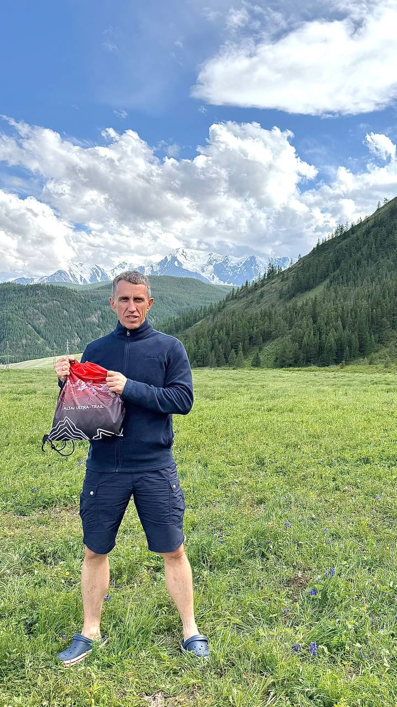
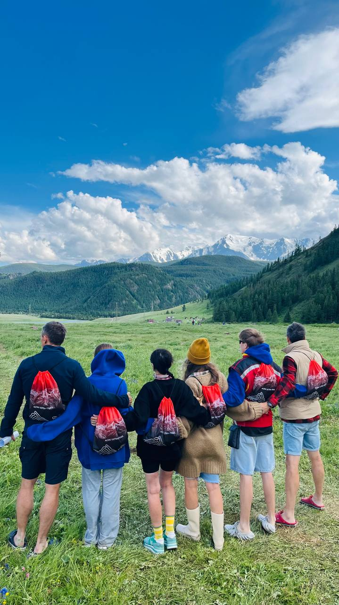
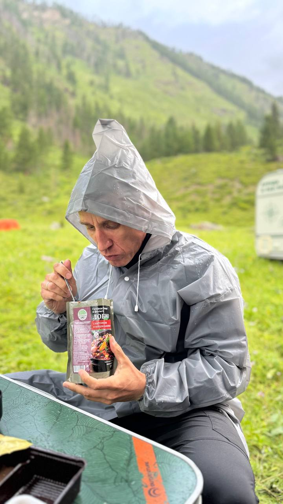
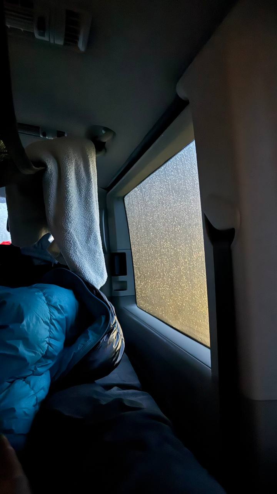
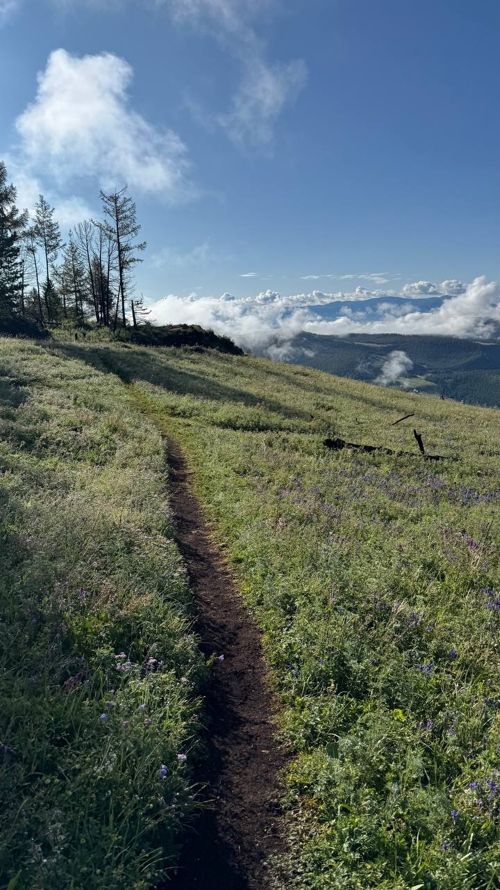
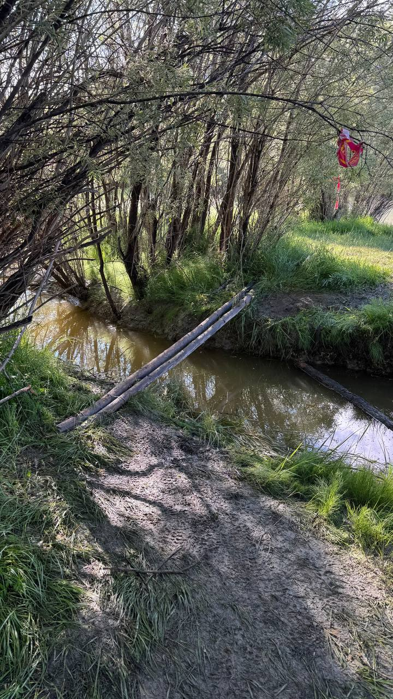
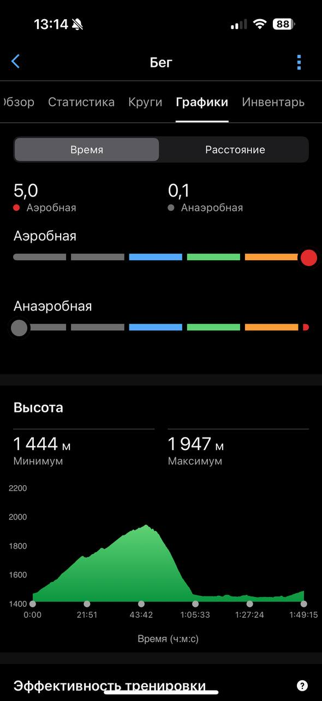
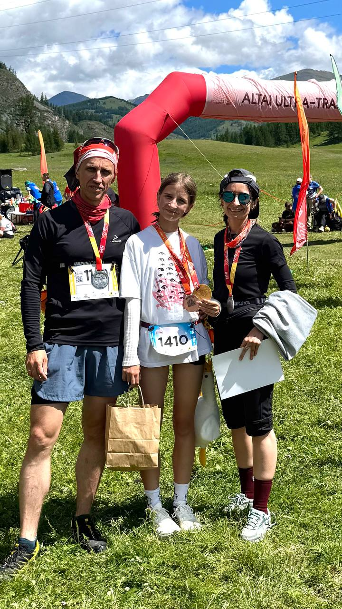

На выходных семьёй приняли участие в трейловом забеге Altai Ultra Trail. Это мой первый опыт организованного трейлового забега, и второй опыт бега по пересечённой местности вообще. Поэтому остановились на самой маленькой дистанции — 13 км с набором высоты 560 метров.
Вообще, изначально я хотел бежать 29 км, но этой авантюре в этом году (к счастью) не суждено было сбыться по той причине, что 29 км бегут на день раньше, а мы не успевали добраться до места проведения соревнований после работы.
Мероприятие проходит на Алтае, за посёлком Акташ. Расстояние от Кемерова — 910 километров, что само по себе далековато. Мы с Наташей купили себе по слоту и ещё слот на детский забег на 2 км. доченьке. Нас поддержали друзья, которые тоже никогда не бегали трейлы.
То есть мы вшестером заплатили около 30 тысяч рублей, за право забежать на гору высотой 560 метров, которая находится в 11 часах езды от дома. Выглядит странно, согласен.
Из Кемерова выехали в пятницу в 16 часов, переночевали уже на Алтае, в посёлке Известковый, в машине. Утром в субботу выехали уже в Акташ, где нужно было до 18 часов получить стартовые пакеты. Благополучно добрались и около 5 часов вечера не только получили стартовые пакеты, но и встретили первого финишировавшего на самый дальний забега Altai Ultra Trail. Ашманов Сергей из Барнаула стартовал ещё в 3 утра и к половине седьмого вечера завершил дистанцию в 110 км.
Наш старт был назначен на 7 утра в воскресенье. Утром +6°С, то есть одеваться непонятно как. Бежал в шортах снизу, термухе и лонгсливе сверху. Термуху хотелось во второй половине трассы уже снять.
Трасса организована так, что весь набор высоты приходился на первые 4,5 километра. Потом ещё более крутой спуск, потом примерно 7 километров относительно ровного поля. То есть сначала у тебя полностью забиваются квадрицепсы, потом на спуске ты добиваешь икры. В конце, казалось бы, беги налегке, но бежать уже нечем.
Были участки, где нужно было натурально карабкаться по скалам, были траверсы, где нужно бежать прямо по горе (одна нога ниже другой), был переход по брёвнам через ручей. Мой средний пульс составил 167 ударов в минуту, тяжеловато.
В общем зачёте занял 22 место из 146. Считаю, отлично.
Сюрприз преподнесла доченька. Несмотря на то, что она в целом спортивный человек, бегать особо не умеет. Бежит изо всех сил, не умеет распределять силы на дистанцию. Сто раз попросил бежать расслаблено. В итоге, заняла первое место среди девочек на дистанции 2 км.
Вообще, со стороны может показаться, что пробежать 13 километров это сложно. На самом деле, забег — самая простая часть, он длится максимум 2 часа. Можно потерпеть всякое. Гораздо сложнее уместить в окружающие забег 2,5 суток: 2000 километров поездки на автомобиле, отсутствие душа и привычного туалета, организацию этого мероприятия для всей семьи так, чтобы всё прошло максимально гладко.
Но ведь это и есть жизнь.
Из Акташа выехали только в полдень, заехали почти по пути, искупаться в аквапарк на Ае. В Кемерове были в половине первого ночи.
Впечатление, будто дома не были около месяца.






